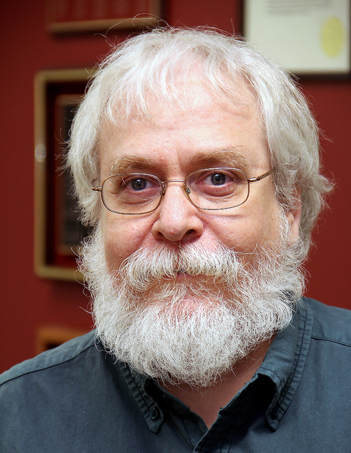
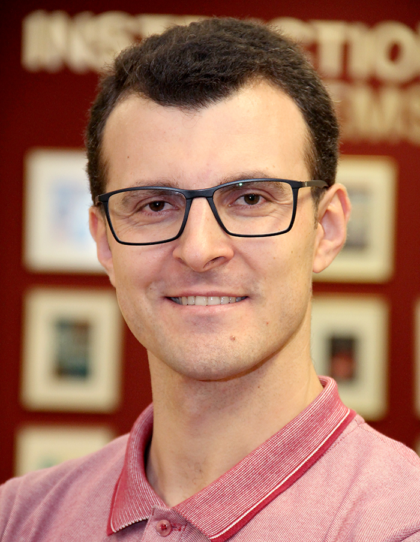
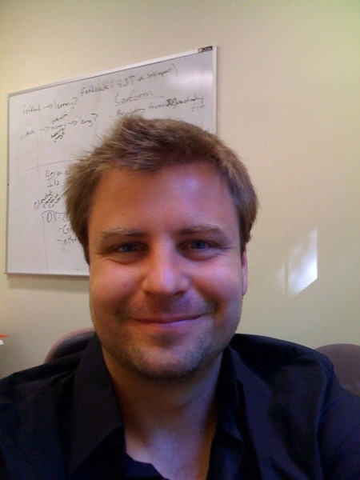

Personnel
Lead Investigators
- Valerie Shute
- Florida State University
- Role: PI Emeritus (Retired), PI through most versions
- Homepage: https://myweb.fsu.edu/vshute/index.html
- Google Scholar: https://scholar.google.com/citations?user=VfKOZ5IAAAAJ&hl=en

- Russell Almond
- Florida State University
- Role: PI for final year of project, design and coding of scoring system
- Homepage: https://ralmond.net/
- Google Scholar: https://scholar.google.com/citations?user=1ZTrIBcAAAAJ&hl=en
- Github: https://github.com/ralmond; R-Universe: https://ralmond.r-universe.dev/
- Ryan S. Baker
- University of Pennsylvania
- Role: Co-PI, developing logic for supports
- Homepage: https://learninganalytics.upenn.edu/ryanbaker/
- Google Scholar: https://scholar.google.com/citations?user=hvs8PEoAAAAJ&hl=en
- Sidney D’Mello
- University of Colorado Boulder
- Role: Co-PI, design of affective supports
- Google Scholar: https://scholar.google.com/citations?user=c-LG6-MAAAAJ&hl=en
- Seyed Ahmad Rahimi
- University of Florida
- Role: Lead developer of the current game version, data collection
- Homepage: https://education.ufl.edu/faculty/rahimi-seyedahmad-ahmad/
- Google Scholar: https://scholar.google.com/citations?user=yDnHbAMAAAAJ&hl=en
- Adam Lamee
- University of Central Florida
- Role: Expert in physics teaching
- Homepage: https://adamlamee.github.io/
- Google Scholar: https://scholar.google.com/citations?user=1j-ueo4AAAAJ&hl=en
Affective Support
- Ginny Smith
- Florida State University
- Role: Project manager, experiment design, data collection
- Google Scholar: https://scholar.google.com/citations?user=Przy7_gAAAAJ&hl=en

- Jaclyn Ocumpaugh
- University of Pennsylvania
- Role: Supervising and coordinating the game testing
- Homepage: https://learninganalytics.upenn.edu/index.html
- Google Scholar: https://scholar.google.com/citations?user=uCl6NE4AAAAJ&hl=en
- Brandon Booth
- University of Colorado Boulder
- Role: Game testing
- Homepage: http://www.brandonmbooth.net/
- Google Scholar: https://scholar.google.com/citations?user=Qr-gySYAAAAJ&hl=en

- Valdemar Švábenský
- University of Pennsylvania
- Role: Leading the experiment execution, data collection
- Homepage: https://elea.sk/valdemar/
- Google Scholar: https://scholar.google.com/citations?user=CSMVlf0AAAAJ&hl=en

- Curt Fulwider
- Florida State University
- Role: Data collection
- Google Scholar: https://scholar.google.com/citations?user=pKYZazcAAAAJ&hl=en
- Gaurav Basnet
- Florida State University
- Role: Data collection
- Google Scholar: <?>
- Chaewon Kim
- Florida State University
- Role: Data collection
- Google Scholar: <?>
Before/After Study
- Chen Sun
- University of Manchester
- Role: Level design, scoring engine construction
- Google Scholar: https://scholar.google.com/citations?user=Y66npM8AAAAJ&hl=en
- Xiaotong Yang
- Florida State University
- Role: Development of pretest and posttest
- Google Scholar: https://scholar.google.com/citations?user=f1E8l3QAAAAJ&hl=en
- Zhichun “Lukas” Liu
- University of Hong Kong
- Role: Analysis of log files
- Homepage: https://web.edu.hku.hk/faculty-academics/lukasliu
- Google Scholar: https://scholar.google.com/citations?user=HcASJEIAAAAJ&hl=en
Alumni
- Fengfeng Ke
- Florida State University
- Role: Co-PI for NSF and Gates projects
- Homepage: https://myweb.fsu.edu/fke/
- Google Scholar: https://scholar.google.com/citations?user=75jPVJIAAAAJ&hl=en

- Stefan Slater
- University of Pennsylvania
- Role: NA
- Homepage: http://stefanslater.com/
- Google Scholar: https://scholar.google.com/citations?user=0yzbPoQAAAAJ&hl=en
- Katie Bainbridge
- Rice University
- Role: NA
- Google Scholar: https://scholar.google.com/citations?user=n-anFIgAAAAJ&hl=en

- Chih-Pu Dai
- Florida State University
- Role: Worked on NSF project
- Homepage: http://www2.hawaii.edu/~cdai/
- Google Scholar: https://scholar.google.com/citations?user=Vp5Y6fYAAAAJ&hl=en
- Renata Kuba
- Florida State University
- Role: Worked on NSF project
- Google Scholar: https://scholar.google.com/citations?user=5Ek98gwAAAAJ&hl=en
- Xi Lu
- Florida State University
- Role: Responsible for many of the game levels
- Google Scholar: <?>

- Seyfullah Tingir
- Florida State University
- Role: Worked on developing the scoring engine
- Google Scholar: https://scholar.google.com/citations?user=iSFVVycAAAAJ&hl=en
- Catherine A. Spann
- University of Colorado Boulder
- Role: NA
- Google Scholar: https://scholar.google.com/citations?user=TCSu1jIAAAAJ&hl=en
- Weinan Zhao
- Olivet University
- Role: Porting the game into Unity
- Google Scholar: https://scholar.google.com/citations?user=Lf0a9e0AAAAJ&hl=en
- Xinhao Xu
- University of Missouri
- Role: NA
- Google Scholar: https://scholar.google.com/citations?user=XD17HxEAAAAJ&hl=en
- Shamya Karumbaiah
- University of Wisconsin-Madison
- Role: NA
- Homepage: https://shamya.github.io/
- Google Scholar: https://scholar.google.com/citations?user=5w4I9VMAAAAJ&hl=en
- Don Franceschetti
- University of Memphis
- Role: Until his death in 2019, Don served as the primary Physics advisor
- Homepage: https://paw.princeton.edu/memorial/donald-r-franceschetti-74
- Google Scholar:
- Lubin Wang
- NA
- Role: NA
- Google Scholar:
- Matthew Small
- NA
- Role: Programmer for First (Gates) version
- Google Scholar:

- Matthew Ventura
- NA
- Role: Leader on Gates Project, Research on Persistance
- Google Scholar:
- Yoon-Jeon Kim
- NA
- Role: NA
- Google Scholar: